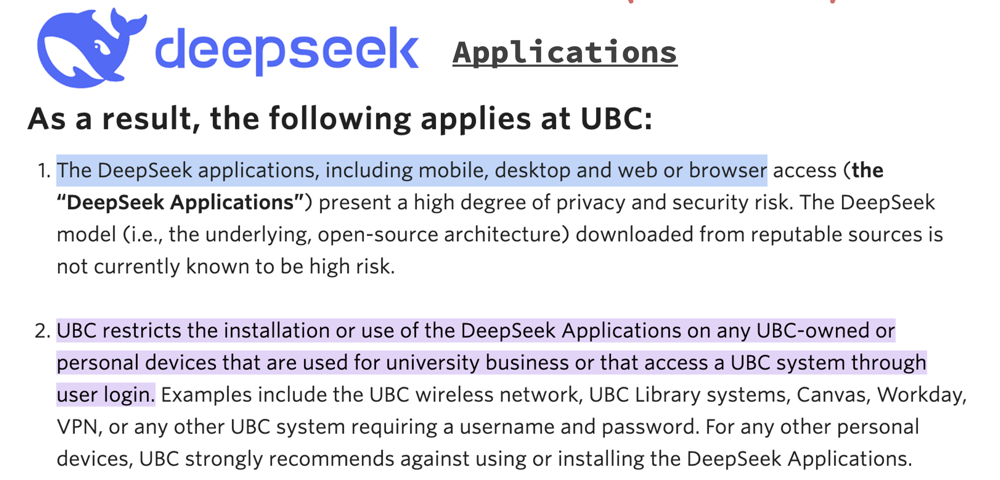

⛑️ Chapter 1: UBC AI Policies & Approved Tools#

1. Free + UBC Approved GenAI Tools#
As you already know, there are lots of AI tools out there, and not everything is safe. For privacy and safety reasons, there are limited generative AI tools that UBC approves.
1.1 OpenAI ChatGPT#
⚠️ The free version of OpenAI’s ChatGPT is one of them, but UBC recommends not logging in when you use ChatGPT to avoid exposing your private information to OpenAI, such as emails. 📧
Of course, there are very limited number of requests you can make to ChatGPT without logging in.
Website: https://chatgpt.com
Free version available (DO NOT login)
Backend model: GPT-5
{kind=link}
1.2 Microsoft Copilot#
🎉 Luckily, UBC approves another tool which is Microsoft Copilot. This is included in your UBC student account with Microsoft!
You have two ways to access Microsoft Copilot:
💻 Option 2: Website Interface#
Simply use the Microsoft Copilot organization tool: https://copilot.microsoft.com
This is a website user interface that can be opened in any browser
{kind=link}
2. 🚨 UBC Restricted GenAI Tools (Important Policy Information)#

2.1 🛑 DeepSeek Applications (Strictly Prohibited)#
UBC does have a strong restriction with the use of DeepSeek.
🚫 UBC restricts the installation and use of ANY DeepSeek applications, including:
📱 Applications you can install on your phone
💻 Applications you can install on your desktop
🌐 Applications you can access through web browsers
🔍 Important Distinction: Applications vs. Model#
I do want to highlight that this restriction only applies to applications, but NOT the model itself.
✅ What IS allowed:
DeepSeek is an open-source model, meaning you can download the entire model from a reputable source onto your computer
Downloading the model and using it locally is completely fine
The underlying open-source architecture is not considered high risk
❌ What is NOT allowed:
Using DeepSeek applications (mobile, desktop, web/browser access)
Any DeepSeek applications on UBC-owned or personal devices used for university business
📋 Official UBC Policy#
As stated in UBC’s official policy on Privacy Matters:
{kind=link}
Source: UBC Privacy Matters - Restricting the use of DeepSeek at UBC
Note: All other GenAI tools & models are NOT recommended by UBC due to privacy and safety reasons (but you are NOT restricted from using them)